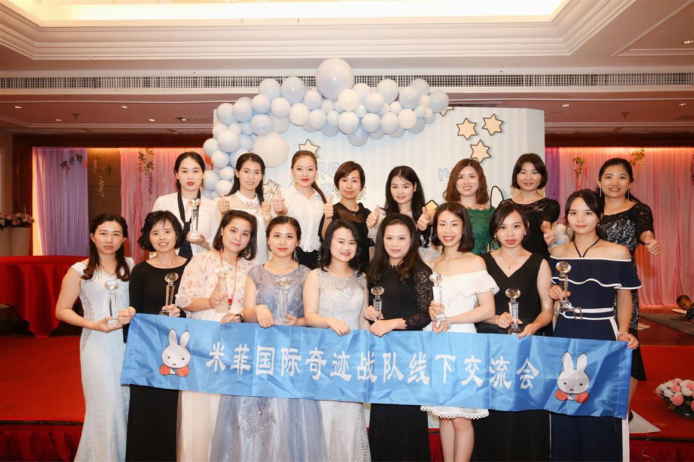
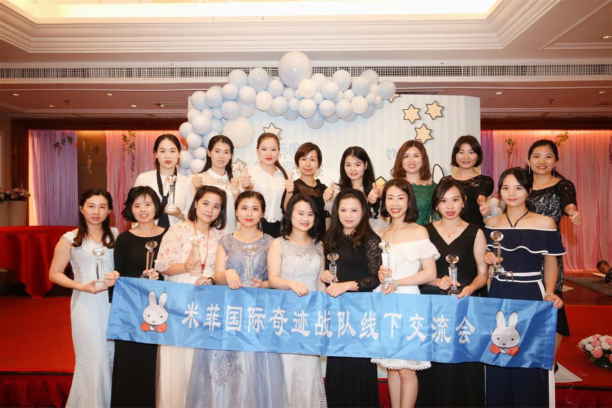

我们长路漫漫，只因学无止境。网站首页米菲交流会
2018年8月18-19日，深圳母婴博览会暨深圳母婴展在深圳福田会展中心隆重召开，国内外一线名品汇聚，幼儿家庭信赖的孕婴童采购盛会。 由都市拼客网-母婴频道战略合作推广、深圳孕婴童展—华南地区最大的、最具权威孕婴童用品展。 展会涵盖一切宝宝成长的所需用品（奶粉辅食、早教培训、玩具文具、孕产服务、洗护纸品、服饰鞋帽、音像书籍、儿童摄影等等）。 现场还有各类公益活动、益智游戏、育儿问答，家长和宝宝可进行趣味亲子互动。
深圳，简称“深”，别称“鹏城”，是中国四大一线城市之一，广东省省辖市、计划单列市、副省级市、国家区域中心城市、超大城市，国务院定位的全国经济中心城市和国际化城市、国家创新型城市、国际科技产业创新中心、全球海洋中心城市、国际性综合交通枢纽，中国三大全国性金融中心之一。深圳是全球10大热门旅游目的地城市，市内著名景点有世界之窗、欢乐谷、深圳红树林、东部华侨城、莲花山、梧桐山、大小梅沙、仙湖植物园、东门老街、大鹏湾、中英街、欢乐海岸、大鹏所城等。
 

新疆维吾尔自治区，简称新疆，位于中国西北边陲，首府乌鲁木齐，是中国五个少数民族自治区之一，也是中国陆地面积最大的省级行政区，面积166万平方公里，占中国国土总面积六分之一。新疆省是举世闻名的歌舞之乡、瓜果之乡、黄金玉石之邦。新疆幅员辽阔，地大物博，山川壮丽，瀚海无垠，古迹遍地，民族众多，民俗奇异。旅游资源极为丰富，全国旅游资源共有68种，而新疆就有56种，占全国旅游资源类型的83%。


厦门岛，别称“鹭岛”，位于福建南部的海湾，面积158平方公里，人口186万，岛上全面商业化。 厦门原名嘉禾屿，明朝依据“厦门城”命名厦门岛，隶属泉州府，1933年设市。因填海造地使面积从最初的110.80平方公里，扩展到157.76平方公里(含鼓浪屿)，现岛上仅有的两个最大的内海湾分别是五缘湾和筼筜港(因围海造地现称筼筜湖)。厦门岛是厦门经济特区的发祥地，岛上有厦门较早的商业和政治中心，辖区湖里、思明是厦门市六区中唯独没有连接大陆的市辖区。
赣州，简称“虔”，别称“虔城”，也称“赣南”，是江西省的南大门，是江西省面积最大、人口最多的地级市。赣州是国家历史文化名城、全国文明城市、国家森林城市、国家园林城市、中国优秀旅游城市、全国双拥模范城市、原中央苏区所在地、万里长征的起点城市，文天祥、周敦颐、海瑞、王守仁、辛弃疾和中共第一代核心领导人皆在赣南主政过。赣州是中国魅力城市之一，有着千里赣江第一城、江南宋城、红色故都、客家摇篮、世界橙乡、世界钨都、稀土王国和世界风水堪舆文化发源地等美誉。


广州，简称穗，别称羊城、花城，是广东省省会、副省级市、国家中心城市、超大城市、国际大都市、国际商贸中心、国际综合交通枢纽、国家综合性门户城市，首批沿海开放城市，是南部战区司令部驻地。广州是国家历史文化名城，从秦朝开始，广州一直是郡治、州治、府治的行政中心；一直是华南地区的政治、军事、经济、文化和科教中心，是岭南文化的发源地和兴盛地。广州从东汉时期起成为海上丝绸之路的主港，唐宋时期成为中国第一大港，是世界著名的东方港市；明清时期是中国唯一的对外贸易大港，是世界上唯一2000多年长盛不衰的大港。

岑溪市（壮文：CINZHIH），广西壮族自治区下辖县级市，由梧州市代管；位于广西壮族自治区东南部，两广交界处，是两广交流和珠三角经济圈与大西南的结合点之一。地势东南高，西北低。属典型亚热带季风气候区。岑溪市自然景观具有典型的亚热带气候优势，是一座未被外界开发污染的城市，拥有4A级国家山地公园——天龙顶国家山地公园、石庙、白霜涧漂流等景点。